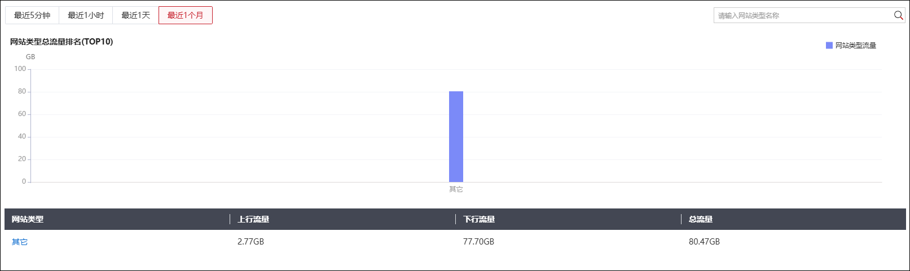
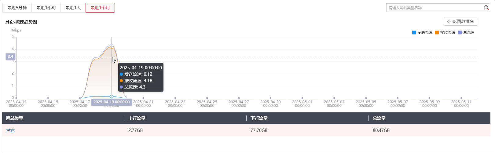

NGFW可根据通过其各个接口的流量对不同类型访问网站的流量进行统计。需要注意的是，NGFW并非对任意访问网站的流量进行统计：仅当开启“网站类型流量”开关，且域名分类库存在相应规则库的情况下，才会计入网站类型流量统计。
|
²“网站类型流量”功能开关处于开启状态，NGFW才会统计网站流量，关于功能开关的配置请参见 统计开关。 |

| 步骤1 | 选择 ，界面如下图所示。 |

页面上方以柱形图形式显示了当前统计周期内总流量TOP10的网站类型的排名情况，将鼠标指针移至柱形图上，可以显示相应网站的总流量。
页面下方以列表形式详细显示了各个网站的网站类型、上行流量、下行流量以及总流量。
点击网站类型总流量排名中的柱形图，或者点击列表网站类型列的网站类型名称，可以查看相应网站的流速趋势图，如下图所示。点击“返回总排名”可以返回总排名界面。

将鼠标指针移动到网站流速趋势图上，可查看相应时间点的发送流速、接收流速和总流速。
| 步骤2 | 设置查询条件。 |
通过切换页面左上角的时间段改变图表的统计周期，可选的流量统计周期为：最近5分钟、最近1小时、最近1天、最近1月。